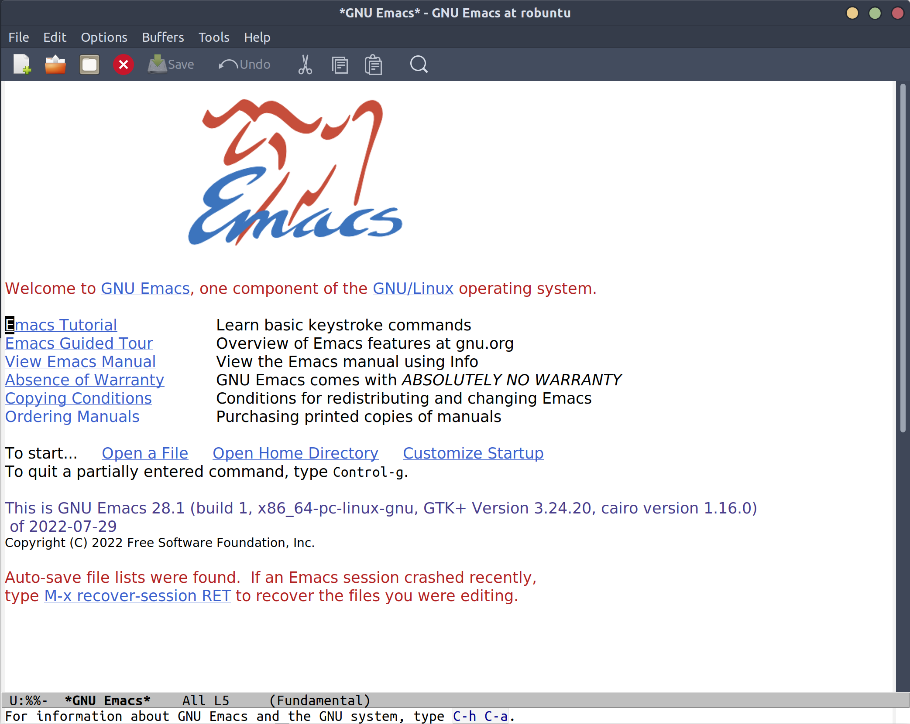
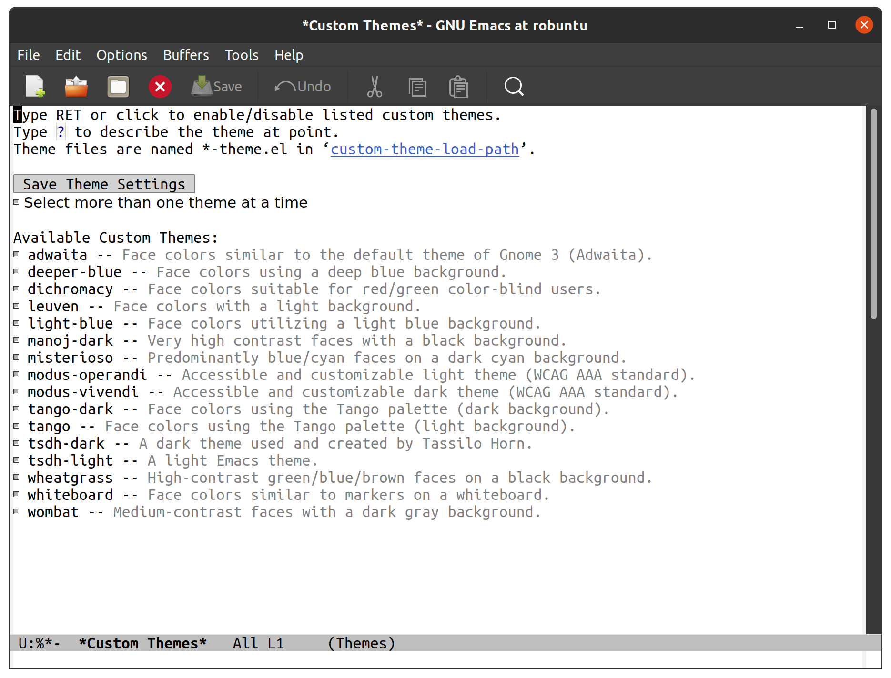
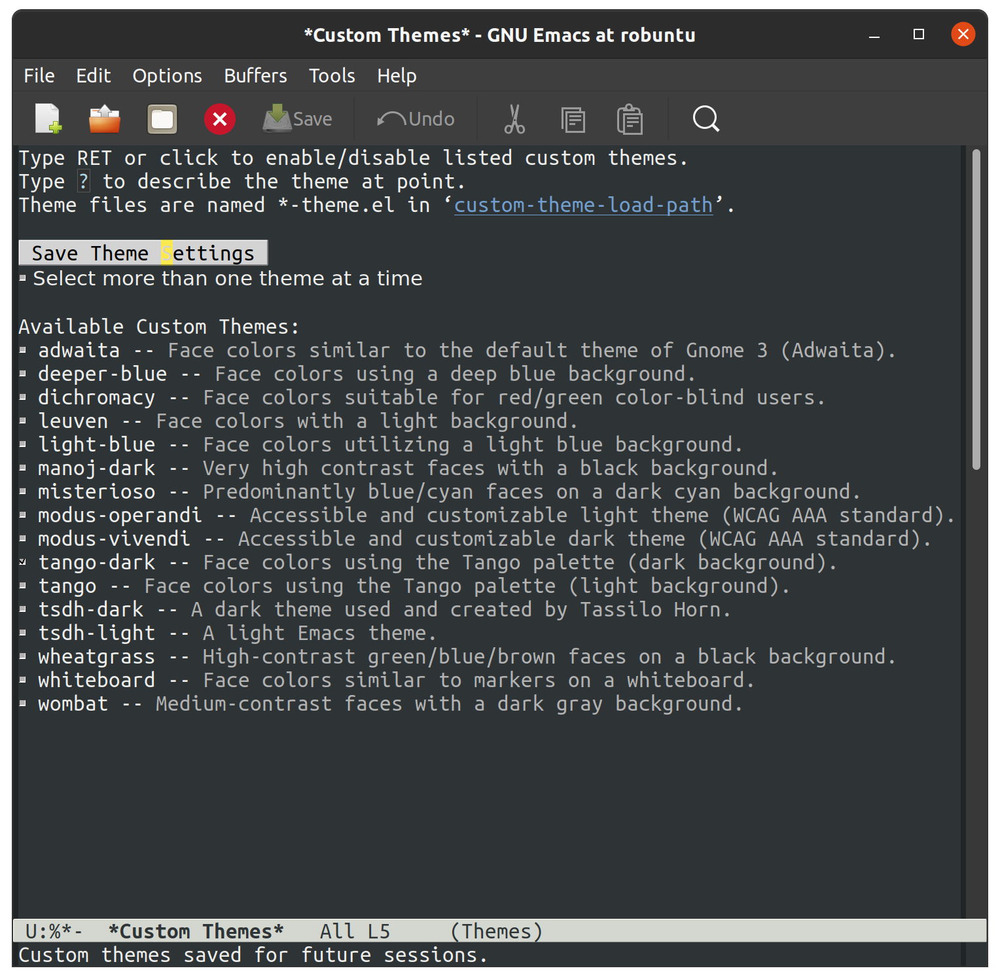

This is the first part of a series in building an emacs configuration around
the data science toolkit, which I introduced in
another article. I
won't be covering the absolute basics here, like how to download and
install Emacs, but just my thoughts as I start building my configuration from
a brand new ~/.emacs.d/init.el1. In many ways, this is a notes-as-I-go type of article, and I may gloss over
details I don't find important yet or would become obvious after a little
Googling.
If this is your first exposure to Emacs, this is what it looks like when you download it and start it without configuring it at all:

At this point, the world is your oyster - they provide a few helpful links to get a new user started, but basically we can take this program and make it do whatever we want, including writing and building this website! While Emacs is a fairly feature-rich editor by itself, I know there are features it doesn't provide off the shelf that I want to include, especially:
That means we need to get comfortable with whatever plugin or package system emacs supports. My first impression exploring Reddit, package author sites, and github is that most Emacs-ers have an incredibly favorable view of throwing whatever kitchen sink you like into your configuration, as long as you feel happy.
This is a strikingly different attitude compared to (especially vanilla) Vim configuration advice. Typically when asking for advice in the Vim circles you'll first be greeted with "you aught to try this built-in capability first". There are also notably vocal members who will argue against using any plugin that doesn't serve some critical missing functionality of the editor. When dipping into the Emacs forums, quite to the contrary, I've seen members mention "I know person A does it like X because of Y, but I do W because Z", often from a place of understanding or empathy to a particular use case. One user even mentioned that they need vertical popup to assist with voice-powered coding tools, and hence will only consider auto-complete frameworks that work in that way for them. That level of community acceptance and support is encouraging to see, and Neovim has adopted a similar attitude to some extent, but is still somewhat nascent, especially with the recent Vim9/Lua debacle.
I'm including this section about "how to use your fingers" because it's something I desparately wish had been laid out for me when I was first starting Emacs. There are a lot of key combinations in Emacs that rely on consistent, easy access to the Ctrl and Alt (option on macOS) keys. What I was lacking was a guide along the lines of "use your left little finger for this modifier, followed by your thumb for this one." Starting out, some of the combinations looked impossibly slow to be useful, just because of the muscle memory I already built around using Ctrl and Alt. For instance, imagine seeing this keyboard shortcut for navigating up three lines in Emacs:
At the time, I was used to hitting Ctrl+3 with my right little finger on the
Ctrl in the lower right and left middle finger on the "3", and then using the
left Ctrl for Ctrl+p. That seemed like a lot of wasted arm movement just to do
what would normally be 3k in Vim. In reality,
nearly every Emacs user has the "Ctrl" key just to the left of their little
finger on the home row.2
This is where most American keyboards place the "Caps Lock" key, which in my
opinion is just dead useless. Regardless of whether you use something like Vim
or Emacs, this is a good key to remap, and I do it on every workstation with
one of these pieces of software:
Given that remapping, the combination should work like this:
I can perform this version just as fast as 3k in
Vim - since the "Ctrl" and "3" can happen at the same time. Below I've listed
my general "finger flow" to maintain tempo while using Emacs. For the rest of
the article I'm going to use Emacs-style notation, which means
C-x is "Ctrl" plus "x" at the same time, and
M-x for "Alt" plus "x" at the same time. The
M is short for "Meta", a vestigial artifact of
Emacs' history as a screen terminal program, and a common point of
befuddlement for young, unwary travelers like me.
⌘-p
⌘-w,
depending on the keyboard I'm using
C-x and
C-c specifically, I have my right enter key
bound to "Ctrl" on hold, "Enter" on tap, so that I can type the
x and
c characters as I normally would, without
stretching my left little finger upwards and to the left at the same time.
When I don't have the ability to program my Enter key this way, I'll hop
between using the right Ctrl and modified Caps Lock key
M-x (that's "Alt" and "x" together, or
"option" + "x" on a mac, which Emacs calls "Meta") specifically, I will
usually use either my right thumb or right little finger on the Alt/option
key, depending on the keyboard and how wide the spacebar is, because I find
that more comfortable than crossing over on my left hand to hit both keys.
Similarly, I find M-q,
M-w, and M-z all
easier by using both hands
Now that we've made it past the first hurdle of using the keyboard, we can actually open Emacs and start configuring it. The most radical departure from my experience in Vim/Neovim starts here, with the Easy Customize interactive system. Emacs leans heavily on its interactive components, backed by plain text and data - which was admittedly a pleasant discovery. VSCode rediscovered this type of system by providing an easy customization UI representing a swath of JSON configuration under the hood, which has proved immensely popular. By comparison, I would argue that the Emacs interface is downright hideous, but easier to grok.
By way of example, let's walk what it looks like to customize the color theme
just via interactive commands. First, we hit
M-x, Emacs' equivalent of the "Command Palette",
if you're coming from something like VSCode or Jupyter, and enter
customize-theme to get a menu that shows all the
default color themes we could use. Another option, barring the use of
M-x, is to use the menu bar and mouse just like
we would in any other GUI program: "Options -> Customize Emacs -> Custom
Themes" takes us to the same place.

Clicking the check box next to "tango-dark" and then clicking the "Save Theme Settings" results in a modified color theme that looks like this:

There are now two new things in your home directory:
.emacs.emacs.d/Opening the former using "File -> Open File…" (which may require turning on a "Show Hidden Files" option, depending on your system) shows us this set of text:
(custom-set-variables
;; custom-set-variables was added by Custom.
;; If you edit it by hand, you could mess it up, so be careful.
;; Your init file should contain only one such instance.
;; If there is more than one, they won't work right.
'(custom-enabled-themes '(tango-dark)))
(custom-set-faces
;; custom-set-faces was added by Custom.
;; If you edit it by hand, you could mess it up, so be careful.
;; Your init file should contain only one such instance.
;; If there is more than one, they won't work right.
)
The code here is Emacs LISP - a programming language in its own right - and
the main configuration language for the Emacs editor. Coming from Vim, where
the only method of configuration is by manually editing your
~/.vimrc, this really blew my socks off. The
implication here is that we can use interactive menus, backed by a proper
programming language (not just JSON data), which can take effect right next to
my hand-tuned configuration, and I'm free to modify it however I like later
on. It is a bit cumbersome to have two folders dedicated to configuration,
though, so the first thing I do here is "File -> Save As…" and write it to
~/.emacs.d/init.el, then delete the
~/.emacs file. Emacs will automatically detect
this and load the correct file the next time we start it up.
Usually, the first symbol inside parenthesis is a function, and the remaining symbols its arguments. So, coming from more traditional languages like Java, Python, C, etc., I tend to visualize it this way:
elisp version Kinda like
------------- ----------
(foo) foo()
(foo "bar") foo("bar")
(foo "bar" 2) foo("bar", 2)
I say "usually" because there are other constructs, such as special forms and macros, but I'm definitely not getting to those for a while. I also say "Kinda like" because I'm pretty sure an experienced elisp-er would look at what I've written and say "yeah, no", but as I'm just starting out this is a helpful mental thesaurus.
We're going to do a combination of letting the customization menus manage the blocks like we showed above and writing a little configuration ourselves, so I'm going to redirect custom to a different file, then load it from there:
;; ~/.emacs.d/init.el
;; Redirect custom so it doesn't edit this file
(setq custom-file "~/.emacs.d/custom.el")
;; Load the custom file
(when (file-exists-p custom-file)
(load custom-file))
In ~/.emacs.d/custom.el, I placed all the
contents of what was written by "custom" - the block that originally went to
~/.emacs after saving the custom theme. Now we
have two distinct spots for customizing emacs:
~/.emacs.d/custom.el - managed by the
interactive customization menus. We never touch this one by hand
~/.emacs.d/init.el - customization we
do write by hand
Later on I'll cover some other common settings for the
init.el file, but for now we'll leave it be to
address more important things. Namely, let's start plugging in new packages.
Unlike most package managers in the Vim world, it's rare nowadays to grab code
directly off github or submoduling/unzipping some tarball into your
configuration directory. Rather, there's a central repository called ELPA,
located at http://elpa.gnu.org/, which
hosts well-known packages we can install right away (Python folks can think of
ELPA a bit like PyPI). By running
M-x list-packages, we're prompted with this
lovely screen:
packages-screen.png
There are a few
special key commands, the most common of which I am using are /n to
filter by name and /s installed to look for
packages I currently have installed.
The first thing I wanted was a vertical pop-up style for my minibuffer when
using M-x or
C-x C-f (finding files), a lot like the "command
palette" you get in other editors like VSCode, Jupyter, and JetBrains, when
selecting generic actions to take. As of Emacs 28, there's a built-in vertical
FIDO mode that mostly does this, but I kept getting a delay between pressing
M-x and the minibuffer popping up, so I opted
for a third party package called vertico that
I'm very happy with. To install it, all I had to do was use the
M-x list-packages buffer posted above and click
on "install", or use
M-x package-install RET vertico (that's
M-x package-install, followed by hitting
"enter", then typing vertico and hitting enter
again), and Emacs has automatically done three things for me:
That last one is mind-blowing. Emacs edited a variable called
package-selected-packages and put it into my
custom.el file, just by the very nature of
installing it interactively.
;; ~/.emacs.d/custom.el
;; --snip--
'(package-selected-packages
'(vertico))
;; --snip--
This means I can use all of Emacs' interactive features, even while keeping my
configuration under the proper text-based version control of my choosing. It
also leaves the possibility of managing this variable manually via
~/.emacs.d/init.el open, but we aren't there
yet. At any point, I can also use
M-x package-delete or the packages buffer to
interactively remove a package from Emacs and
~/.emacs.d/custom.el. Since I'd like to ship my
Emacs configuration to many workstations, I'd like Emacs to automatically
install these selected plugins, and remove obsolete ones, at boot. There are a
couple functions that allow me to do this:
;; ~/.emacs.d/init.el
;; Enable built-in package manager
(require 'package)
;; Redirect custom so it doesn't edit this file
(setq custom-file "~/.emacs.d/custom.el")
;; Load the custom file
(when (file-exists-p custom-file)
(load custom-file))
;; At this point, package-selected-packages has been set by loading the custom-file
;; Remove any packages that are installed, but aren't listed in package-selected-packages
(package-autoremove)
;; Keep our registry up-to-date
(package-refresh-contents)
;; Install selected packages
(package-install-selected-packages)
As far as I'm concerned at the moment, this is all the package management I need! The built-in support is so good that I don't find myself wanting to reach towards an external package manager at all, like I would typically do in Neovim.3
There is also a community-maintained, much larger selection of plugins on
something called "Milkypostman's Emacs Lisp Package Archive", usually
abbreviated to MELPA, which serves an almost identical role as ELPA, but
doesn't require going through the official GNU channels to get your project
hosted. As such, most projects on GitHub require you to enable fetching
packages from MELPA before installing. There are two versions of MELPA -
melpa.org/packages and the "stable"
melpa.org/packages. Both the
MELPA setup instructions
and
community discussion
recommend against the use of MELPA-stable, so I'll be sticking with
the regular version:
;; ~/.emacs.d/init.el
;; --snip--
;; Keep our registry up-to-date
(add-to-list 'package-archives '("melpa" . "https://melpa.org/packages/") t)
(package-refresh-contents)
;; --snip--
There's a decent amount of elisp witchcraft in the
add-to-list statement alone, but in essence it
just enables Emacs to "see" what's on the community MELPA archive when we run
M-x list-packages or
M-x package-install. After adding this and
digging around /r/emacs and github, I have a minimal set of packages that are
enabling me to be productive without too much configuration so far4
orderless below)
vertico, shows me
things like documentation and keybindings next to commands when I open
M-x)
I am also trying out both lsp-mode with lsp-pyright and eglot for language server stuff to see which one I like better, but haven't finalized it yet so we'll keep them in our back pocket for now. I tend to shy away from exceptionally large frameworks, so helm didn't look appealing at first glance. I'd rather pick exactly the pieces I want to include and get them working one-by-one.
The one piece that confused me more than anything while starting out is what
the heck
use-package
actually is or does. Many users online would refer to it as "their package
manager", however it is emphatically not a package manager, as the
very first section of their README notes. Because I had just been copying
use-package
snippets from around the internet before I took a minute to read the
use-package documentation, it took me a while to
figure out that use-package is meant to be used
in conjunction with a package manager, which in our case is the
built-in package.el. After
package.el installs a new package, it's likely
there are ways to tweak that package that suit our tastes, and
that is what we ask use-package to do
for us.
Without diving into too much detail, it's easy to imagine how complex managing package start up, configuration, and order-of-operations could be:
It bears mentioning that there are ways to have
use-package
interface with package.el, but I'm going to hold off on those until I feel like I need them. Here's an
example of how I configure tree-sitter to add spiffy highlighting everywhere I
go, without bogging down startup time of emacs:
(use-package tree-sitter
:init (global-tree-sitter-mode)
:hook (tree-sitter-after-on . tree-sitter-hl-mode)
:config
(use-package tree-sitter-hl)
(use-package tree-sitter-langs)
(use-package tree-sitter-debug)
(use-package tree-sitter-query))
The README on the use-package GitHub page
explains all the special :<section> bits,
but in essence this is a clean way of saying:
(global-tree-sitter-mode) on startup
tree-sitter-hl-mode whenever we boot
up tree-sitter
tree-sitter to also use four other
useful packages
There are many, many capabilities bundled into
use-package, and even very minimal
configurations will tend to include it, because of the brevity it brings to
advanced package configuration.
For our resident Microsoft Windows users - I'll be using Unix-style
paths, which means ~ is the home
directory, like C:\Users\Robb, and
/ as path separators. Fret not, as Emacs
will understand this style of pathing and the
~, even on Windows↩︎
It's also likely that its predecessor
TECO from
the 60's was developed on a terminal on which the "Ctrl" key was located
just to the left of a↩︎
Such as
packer.nvim
(inspired by use-package) or
vim-plug↩︎
I'll use another article to cover specific, intersting configuration on a per-package basis↩︎